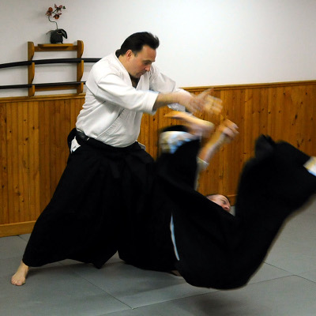

|

David Yates Sensei
David Yates Sensei, 6th Dan Shidoin with the Canadian Aikido Federation (CAF), began his Aikido training in 1980 at the Ottawa Aikikai under Richard Ostrofsky Sensei, a student of Massimo di Villadorata of the Montreal Aikikai. Yates Sensei received his dan rankings up to 3rd dan from Yamada Sensei, founder of the New York Aikikai and the United States Aikido Federation, and his 4th and 5th dan rankings from Kawahara Shihan, former Technical Director of the CAF. Yates Sensei was given the title of CAF Shidoin by Kawahara Sensei in 2008, and was promoted to 6th dan by Osawa Sensei in 2018.
As Shidoin, Yates Sensei has been invited to teach classes in cities across Canada and as far away as San Diego and Sydney, Australia.
Yates Sensei served 3 terms as President of the CAF and two terms as Vice-President. Yates Sensei also served on the board of the Ontario Aikido Federation over many years, holding every position on the board including President for multiple terms.
On February 11th, 1985, Yates Sensei opened the Kanata Aikikai located in his home, where it remains to this day. Since the opening of the Kanata Aikikai, Yates Sensei has trained hundreds of adults and children in his powerful but graceful style of Aikido.
|
Assistant Instructors
Nick Petrescu - 4th Dan
|
Nick Petrescu, Yondan (4th degree black belt) has started training in Aikido in 1988. His black belt examinations were conducted by two of the world's leading Shihan (master instructors), Yamada Yoshimitsu Shihan, (Chairman of the Board of the United States Aikido Federation and the Latin America Aikido Federation) and Kawahara Yukio Shihan. Nick is an active CAF and OAF member and a registered Yudansha of the Hombu Aikikai in Japan. |
Peter Johnson - 3rd Dan
|
Sadly Peter passed away in July of 2023 after 30 years of training at the Kanata Aikikai. Peter's unexpected passing was a huge blow to the entire dojo, and to everyone who knew him. His legacy will continue on, he will never be forgotten. Rest in peace my dear friend.
Peter Johnson, Sandan (3rd degree black belt) began his Aikido training in the early 90's with the Kanata Aikikai. Training in this discipline of martial arts has always been of great interest to Peter because of the mix of hand-to-hand and weapons. Peter has trained in numerous locations in Canada and USA because of work travel. Everywhere he has gone dojos have welcomed him warmly. Peter currently holds a Sandan ranking in Aikido and on occasion instructs classes. Peter credits Sensei Yates for his love of Aikido and his continuing development well into the future. |
Chris Prud'Homme - 2nd Dan
|
Chris Prud’homme, Nidan (2nd degree black belt) started his Aikido training in 1990. He quickly climbed the ranks and in 1997 he received his Shodan, followed by his Nidan (2nd degree black belt) in 2007. His Aikido continues to grow and evolve under Sensei Yates’ tutelage and as an Assistant Instructor with the Kanata Aikikai. |
Classes are offered for both adults and children. Visitors are always welcome!
If you would like to watch a class (or join in) to see what Aikido is all about, please contact David Yates Sensei at (613)-592-2743 or by email: dcycel@gmail.com.
|